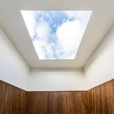
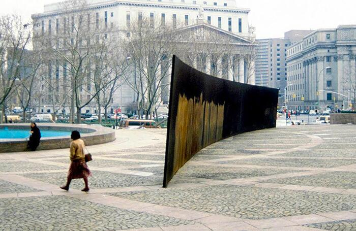
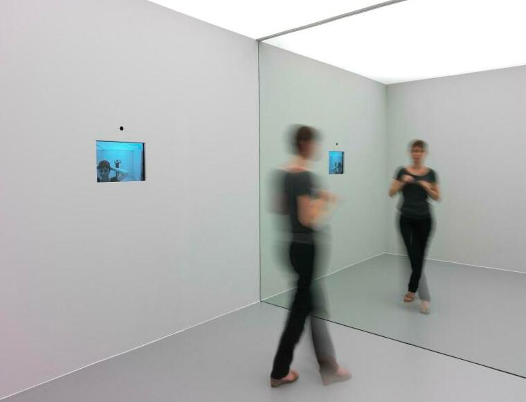
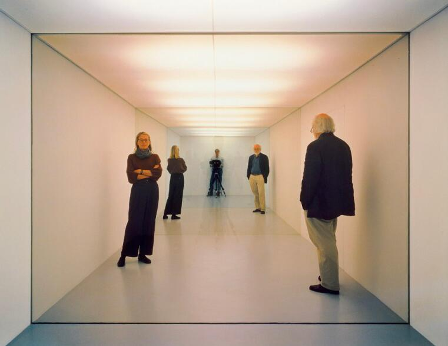
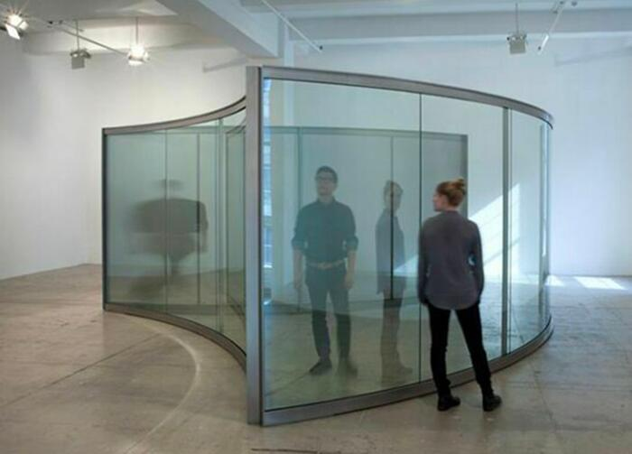
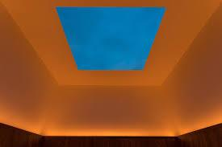
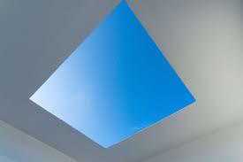
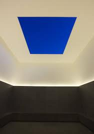
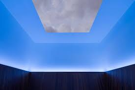

L’architettura non si guarda da fuori, si vive; il corpo in movimento è il primo metro di misura dello spazio. Le immagini proposte mostrano installazioni e opere che non si comprendono senza attraversamento, coinvolgimento, esperienza. È una prima riflessione sul ruolo sensoriale e percettivo del corpo nel progetto.

Tilted Arc (1981) di Richard Serra era una grande e controversa scultura pubblica situata nella Federal Plaza, a Manhattan, New York City. Le fotografie della scultura mostrano tipicamente l'imponente parete curva in acciaio Cor-Ten che divide in due la piazza aperta tra gli edifici governativi.
Descrizione dell'operaLa scultura fu commissionata dalla General Services Administration (GSA) degli Stati Uniti nell'ambito del suo programma Art-in-Architecture e installata nel 1981. Tuttavia, divenne immediatamente molto controversa:



L'installazione di Dan Graham del 1974 Present Continuous Past(s) è un'opera fondamentale dell’arte concettuale e video che esplora la percezione del tempo e la consapevolezza di sé dello spettatore attraverso un sofisticato sistema di feedback con ritardo temporale che utilizza uno specchio bidirezionale, una videocamera e un monitor.
Dettagli dell'installazione ed esperienzaL'installazione è tipicamente una stanza o uno spazio che contiene i seguenti componenti:




Uno dei celebri Skyspaces dell'artista James Turrell, Meeting è un'installazione site-specific che invita gli spettatori a guardare verso l'alto per ammirare una vista senza ostacoli del cielo. Rappresentante chiave del movimento “Light and Space” incentrato a Los Angeles negli anni '60, James Turrell crea opere d'arte che consistono principalmente di luce, esplorando questioni fondamentali sulla natura della percezione umana rendendo tangibile l'atto della visione.
Meeting è stato il secondo Skyspace realizzato da Turrell e il primo negli Stati Uniti, diventando un prototipo per le numerose opere successive che avrebbe realizzato nei decenni seguenti. Commissionata originariamente nel 1976 dalla fondatrice del P.S.1 Alanna Heiss per la mostra inaugurale del museo, l'opera non fu realizzata fino al 1980 e Turrell continuò ad apportare modifiche fino alla sua apertura al pubblico nel 1986. Nel 2016 Meeting è entrato a far parte della collezione del Museum of Modern Art.
L'installazione presenta un programma di illuminazione multicolore sincronizzato con l'alba e il tramonto che cambia sottilmente colore al variare delle tonalità del cielo.